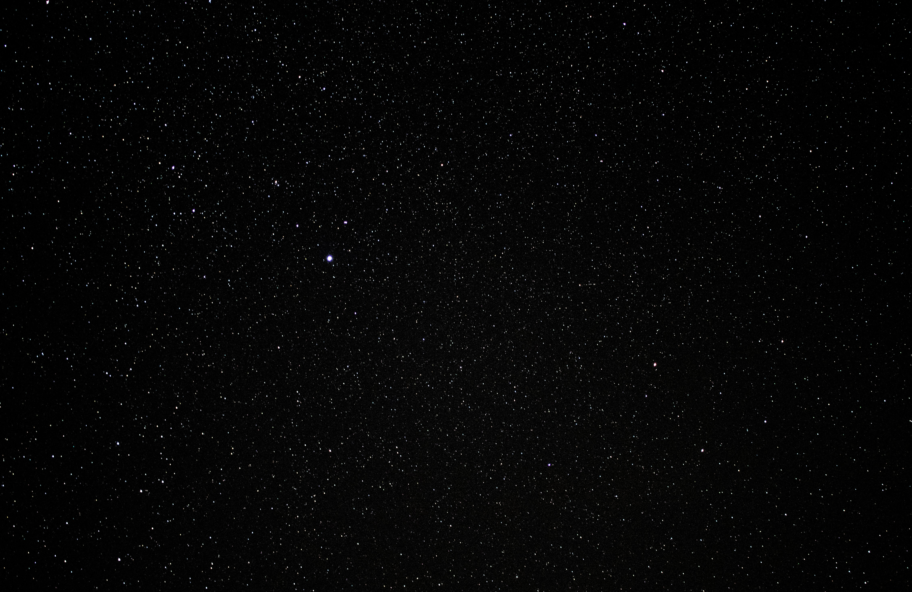

About this journey
Read the story behind Our Astro Journey and see how beginner astrophotography is evolving from phone shots to deeper projects.
Learn more
This is the place to check when new pages, guides, or tools go live. Each card gives a quick outline of what has been added and links straight to it.
This site now uses dedicated pages for each topic so you can jump directly to the content you want without scrolling through a single long page.
Read the story behind Our Astro Journey and see how beginner astrophotography is evolving from phone shots to deeper projects.
Learn moreCheck the weather page for forecasting tips, location planning, and the tools we use for observing nights.
Open weather pageFind dark sky site information and learn where to look for the best observing conditions across the UK.
Open dark skiesOur archive is growing, so the best way to browse everything is through dedicated gallery pages for the full collection, moon images, and Hubble-inspired studies.
Browse every image from our learning journey in one place, from moon shots to deep-sky practice.
View the full gallerySee the moon images taken from the front door and explore the progression from phone photography to more careful framing.
See moon imagesOpen the Hubble collection to focus on the deep-sky targets and image-processing practice that are shaping our learning.
Open Hubble galleryThis site is now organized into dedicated sections, so you can jump directly to the pages you want: About, Weather, Dark Skies, Gallery, News, and Contact.
Fresh moon photography updates from camera phone sessions and early astrophotography practice.
Open Moon galleryTake a look at the curated Hubble collection and the deep-sky images that appear in the focused gallery.
Open Hubble gallerySee the full gallery of astrophotography images from our learning journey, with a growing collection of space and night sky images.
Open full gallery